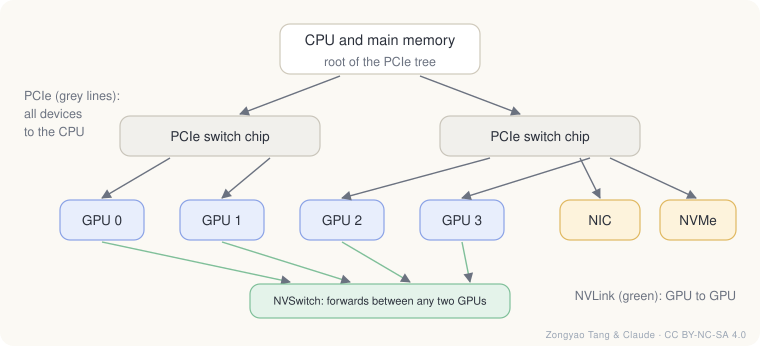
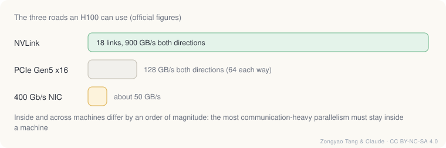
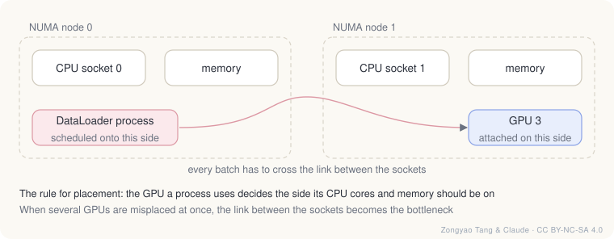

The thread: inside the machine there are really two road networks → first the general-purpose one (PCIe), and how its bandwidth is worked out → then the GPU-only one (NVLink) → with two networks, which road the data between two devices takes depends on their "distance" → finally the CPU and memory come into the picture too (NUMA). The numbers and commands in this unit come up again and again when troubleshooting multi-GPU performance.
Part 5 · High-speed interconnects5.1 Interconnects inside a machine: PCIe, NVLink and NVSwitch
Translated by AI (Anthropic's Claude) from the Chinese edition. The Chinese original is the reference.
This unit answersHow are the eight GPUs in one machine connected to each other and to the CPU? How wide is each road?
The start of part 5. Follows DMA in 0.3: when data moves directly between devices, these are the channels it travels.
- Two road networks inside the machine: general-purpose PCIe and GPU-only NVLink
- PCIe bandwidth = the rate per lane × the number of lanes, taken at the narrowest stretch of the path
- NVLink plus NVSwitch: a private line between every pair of GPUs
- The "distance" between two devices decides which road the data takes
- NUMA: processes, memory and devices should be on the same side
Explanation
1Two road networks inside the machine: general-purpose PCIe and GPU-only NVLink
In a multi-GPU server, all devices (GPUs, network cards, NVMe drives) hang below the CPU through PCIe; besides that, the GPUs have a separate network between them: NVLink. Anyone can use the first; the second only carries data between GPUs.

The connections inside a multi-GPU server (illustrative, showing only 4 GPUs and one network card) Lay out the parts in the box that have to do with moving data, and there are four kinds: the CPU (with main memory attached), GPUs, network cards, NVMe drives. There are two kinds of connection between them.
PCIe is general-purpose. It is a tree: the root is at the CPU (called the root complex), below it can hang switch chips (PCIe switches), and below those the individual devices. All traffic "between a device and the CPU" goes over it:
- Main memory → GPU memory (step 3 in 0.1, copying the batch to the GPU)
- GPU memory ↔ network card (in cross-machine communication, data entering and leaving the machine)
- Drive → main memory or GPU memory
NVLink is dedicated, connecting only GPU to GPU (through an NVSwitch chip, any GPU to any other). Synchronising gradients among GPUs and the per-layer data exchange of tensor parallelism go over it.
On machines without NVLink (multi-GPU machines with consumer graphics cards, for example), data between GPUs can only go over PCIe, an order of magnitude slower, which is the main reason they scale poorly across GPUs.
This picture sets the width of several stretches of the pipeline from part 0. The next three cards explain PCIe, NVLink and "which road", one at a time.
An analogyLike a city: ordinary roads (PCIe) reach every house and any vehicle can use them; between a few big factories, a dedicated freight railway (NVLink) has been built that carries only their goods to each other.
So to judge whether a data transfer is fast, first ask which network it uses: CPU to GPU and GPU to network card can only use PCIe; GPU to GPU uses NVLink if there is one.
Builds on DMA: the device moves the data itself; the CPU only gives the orderOne training step is a pipeline of stages in series; the slowest stage sets the speed- First the general-purpose network. Its bandwidth has a simple formula, and two common traps.
2PCIe bandwidth = the rate per lane × the number of lanes, taken at the narrowest stretch of the path
With each PCIe generation, the rate of each lane doubles; a device uses at most 16 lanes. Gen4 x16 gives about 32 GB/s in each direction, Gen5 x16 about 64 GB/s in each direction. Data from one device to another passes through several links, and the actual bandwidth is set by the narrowest of them.
How to work it out. Two numbers are enough:
- The rate per lane in each direction: Gen3 about 1 GB/s, Gen4 about 2 GB/s, Gen5 about 4 GB/s.
- The number of lanes: GPUs and fast network cards are usually x16.
So Gen4 x16 is about 32 GB/s in each direction (the A100 generation), Gen5 x16 about 64 GB/s in each direction (the H100 generation). Vendors sometimes add the two directions and quote 64 and 128; when reading the numbers, be clear whether they are one-way or both ways.
Put it next to other numbers and you see whether it is wide or narrow in the pipeline:
- Main memory bandwidth: over a hundred GB/s per CPU socket.
- A 400 Gb/s network card: about 50 GB/s, which one Gen5 x16 link can just fill.
- NVLink: several hundred GB/s per GPU (next card).
Trap one: negotiated down. A PCIe link "trains" at power-on, the two ends negotiating a generation and lane count that work reliably. A card not seated firmly, a poor riser cable, wrong BIOS settings can all make a link that should be Gen4 x16 run at Gen3 or x8, half or a quarter of the bandwidth, with no error reported by the system.
Trap two: a shared uplink. To hang 8 GPUs and several network cards below one CPU, servers use PCIe switch chips that share one uplink among several devices. Each device has x16 to the switch, but when they talk to the CPU at the same time they share that one uplink. If 4 GPUs share one x16 uplink, for instance, each gets only a quarter when all load data from main memory at once.
(Two devices under the same switch chip can transfer between themselves without going through the uplink; this comes in when we discuss "distance" below.)
Troubleshooting: checking what speed a PCIe link actually runs at
lspcishows two sets of numbers for each device: what it "can support" and what it "actually negotiated".# find the GPU's bus address lspci | grep -i nvidia # look at one device's link state (needs root) sudo lspci -vv -s 3b:00.0 | grep -E "LnkCap|LnkSta"
Compare two lines of the output:
LnkCap: the highest rate and width the device supports, such asSpeed 16GT/s, Width x16.LnkSta: the rate and width it actually runs at now.
The rates map to generations: 8GT/s is Gen3, 16GT/s Gen4, 32GT/s Gen5. If the rate or width in
LnkStais belowLnkCap, the link has been downgraded (some versions mark it "downgraded" directly).Do the same check for network cards: a 400 Gb/s card that negotiated only x8 will never run at full speed.
To measure the result directly, NVIDIA's
nvbandwidthtool measures the actual bandwidth from main memory to each GPU and from GPU to GPU; compare with the numbers worked out above. If one of eight GPUs is clearly lower, its link or slot is most likely the problem.An analogyLike a motorway: each generation doubles the speed limit of each lane, and the number of lanes is counted separately. If one stretch between A and B has only 4 lanes, the whole trip's capacity is that of 4 lanes.
So PCIe is seldom the advertised number: a link may have negotiated a lower generation or fewer lanes, and the uplink may be shared by several devices. When troubleshooting, what to look at is "the rate and width actually negotiated".
- PCIe is designed so that "any device can be connected". GPUs have too much data to exchange, so NVIDIA built a separate network.
3NVLink plus NVSwitch: a private line between every pair of GPUs
NVLink is a dedicated high-speed link between GPUs. An A100 has 12 links, 600 GB/s in total; an H100 has 18, 900 GB/s in total, which NVIDIA describes as 7 times PCIe Gen5. NVSwitch is its switch chip: every GPU's links connect to the switch chips, so any two GPUs can communicate at full speed.
How wide. NVIDIA's official figures (all per GPU, all links, both directions combined):
- A100: 12 third-generation NVLinks, 600 GB/s in total.
- H100: 18 fourth-generation NVLinks, 900 GB/s in total.
- For comparison: the H100's PCIe Gen5 x16 is 128 GB/s in total, hence NVIDIA's "7 times".
Why a switch chip is needed. Links are point to point. Without a switch chip, to connect 8 GPUs directly to each other, each GPU would have to divide its links among the other 7, leaving one or two between each pair. Then the bandwidth between two GPUs is only a fraction of the total, and may even differ between pairs.
NVSwitch changes the wiring: all of each GPU's links connect to the switch chips, which forward between any two GPUs. So any pair communicating can use all of their links. This also makes ring all-reduce (6.1) simple: every hop around the ring runs at full speed.
Back to the whole picture. The "exits" of one H100:
- To other GPUs in the same machine: NVLink, 900 GB/s in total.
- To main memory or a network card: PCIe, 64 GB/s in each direction.
- Through a network card to other machines: a 400 Gb/s card, about 50 GB/s.
Inside the machine and across machines differ by an order of magnitude. This drop is the starting point of every parallelism scheme in part 7: the most communication-heavy form of parallelism (tensor parallelism) must stay inside a machine, and only forms with less communication can be placed across machines.

The widths of the three roads Newer rack-scale systems extend NVLink between machines (dozens of GPUs in a rack all connected by NVLink); the principle is the same, only "inside the machine" has grown.
Troubleshooting: are all the NVLinks working properly?
# the state and rate of each NVLink nvidia-smi nvlink -s # the error counters of each NVLink nvidia-smi nvlink -e # whether each pair can access each other directly over NVLink nvidia-smi topo -p2p n
How to read them:
- In the output of
-s, every link should be active, all at the same rate. A link shown as inactive means this GPU has lost part of its bandwidth. - The error counters of
-eshould barely grow. Look again after a while; if one link's counter keeps rising, that link has a problem. - In the matrix of
topo -p2p n, every pair of GPUs should show OK.
Clues in the kernel log. When a GPU has a hardware-type problem, the driver writes a numbered Xid record to the kernel log:
sudo dmesg -T | grep -i xid
Look up the numbers in NVIDIA's Xid documentation (https://docs.nvidia.com/deploy/xid-errors/). Two fairly common ones related to the interconnect: 74 is an NVLink error, 79 a GPU that has fallen off the bus. When training hangs or fails mid-run for no apparent reason, a glance here first saves a lot of guessing at the software layer.
Measuring GPU-to-GPU bandwidth with
nvbandwidthalso finds the cases of "state normal, but actually slow".An analogyLike telephones: early on, private lines were run between each pair, and 8 people had to divide their lines among 7 others; with an exchange, everyone connects all their lines to the exchange and can use all of them to talk to anyone.
So collectives within one machine (gradient synchronisation, tensor parallelism) are almost never the bottleneck; the bottleneck usually appears the moment data leaves the machine, when the bandwidth narrows by an order of magnitude at once.
Builds on PCIe bandwidth = the rate per lane × the number of lanes, taken at the narrowest stretch of the pathUsed later in The "distance" between two devices decides which road the data takesFirst work out "what it should be", then see how far the measurement falls shortForms of parallelism combined in layers by bandwidthThe device plugin: reporting GPUs as an integer resource that can be requestedSourcesNVIDIA Hopper Architecture In-Depth (NVLink and NVSwitch)Demystifying NCCL, page 4: transport paths inside a machine- Both road networks are clear. So for two particular devices, which road does the data take? It depends on where they are relative to each other.
4The "distance" between two devices decides which road the data takes
Which road data takes between two devices depends on how close they are on the PCIe tree: a direct NVLink is best; under the same PCIe switch chip, they can transfer directly without going through the CPU; across the CPU's root port, it takes a detour; on two different CPU sockets is furthest.
nvidia-smi topo -mprints a matrix listing the relationship between every pair of devices (GPUs and network cards). Its legend, from near to far:- NV#: connected by # NVLinks. Appears only between GPUs.
- PIX: at most one PCIe bridge in between, that is, under the same PCIe switch chip.
- PXB: several PCIe bridges in between, but not through the CPU's host bridge.
- PHB: passes through the PCIe host bridge on the CPU.
- NODE: within the same NUMA node, but across different host bridges.
- SYS: in different NUMA nodes, crossing the interconnect between CPU sockets.
Why distance matters: look at the two most common pairings.
GPU and network card. In cross-machine communication, data has to go from GPU memory to the network card. If the GPU and network card are under the same PCIe switch chip (PIX), the card can read and write GPU memory directly (GPUDirect RDMA, covered in 5.2), and the data does not pass through the CPU or main memory. If they are far apart, the data first has to be copied to main memory and then handed to the card: one more copy, using bandwidth on the CPU side too. So servers designed for training usually give every one or two GPUs a network card, placed under the same switch chip.
GPU and GPU (without NVLink). Two GPUs under the same switch chip can transfer directly; two GPUs separated by the CPU send their traffic up to the CPU and back down, slower, and affected by the shared uplink.
A setting that blocks the "short cut". When the server has IO virtualisation turned on (the IOMMU, PCIe ACS), transfers between devices under the same switch chip are forced to detour through the CPU for checking. NCCL's documentation warns explicitly: this can reduce performance significantly, or even cause hangs. For training on bare metal it is usually turned off.
Troubleshooting: reading nvidia-smi topo -m, and checking whether the "short cut" is blocked
nvidia-smi topo -m
With the matrix in hand, look at three things:
- Whether between GPUs it is NV followed by a number everywhere, with the same number. PHB or SYS means that pair has no NVLink to use.
- Which network card each GPU is closest to (PIX or PXB). Note the pairing: it is the card this GPU should use for cross-machine communication.
- The two columns after the matrix, CPU Affinity and NUMA Affinity: which NUMA node each GPU belongs to and which CPU cores go with it.
Check ACS.
sudo lspci -vvv | grep ACSCtl
Lines in the output showing
SrcValid+mean ACS may be on at that bridge.Check the IOMMU.
cat /proc/cmdline sudo dmesg | grep -i -E "iommu|dmar"
Check whether GPUs can access each other directly.
nvidia-smi topo -p2p p # over PCIe nvidia-smi topo -p2p n # over NVLink
These checks all come from NCCL's official troubleshooting documentation. In a container or virtual machine, confirm one more thing: NCCL learns the PCIe topology by reading
/sys; if the/sysseen in the container is incomplete, or the virtual machine presents a "fake" PCIe tree, NCCL may choose the wrong road.An analogyLike delivering a document in the same building: within the same office you just hand it over; on the same floor you walk down a corridor; on a different floor you wait for the lift; in another building you go out of the front door.
So how the hardware is plugged in, and which GPU the software pairs with which network card, decide the bandwidth directly. The first thing NCCL does when it starts is find out these distances, then choose its roads accordingly.
Builds on NVLink plus NVSwitch: a private line between every pair of GPUsDMA: the device moves the data itself; the CPU only gives the orderUsed later in NUMA: processes, memory and devices should be on the same sideGPUDirect RDMA: what is registered is not main memory but GPU memoryMost of the work is done once at initialisation: probe the topology, build rings and trees, connect every pair of GPUsA few typical faults, each with its own fingerprintSourcesNCCL User Guide: GPU Direct, ACS and topology detectionDemystifying NCCL, page 5: the conditions for GPUDirect RDMA- Finally, put the CPU and memory into the picture. They too have a question of "which side".
5NUMA: processes, memory and devices should be on the same side
A two-socket server has two CPU sockets, each with half the memory, each with half the GPUs and network cards below it. Accessing memory and devices on "your own side" is fast; reaching the other side goes over the interconnect between the two CPUs, slower and more easily congested.
NUMA means "accessing memory in different places runs at different speeds". On a two-socket server:
- Each CPU socket and the memory directly attached to it form a NUMA node.
- Each GPU and each network card hangs below one of the sockets through PCIe.
- The two sockets are connected, but the bandwidth is limited, and all traffic crossing sides shares it.
Fit the pipeline of part 0 into this and look at a misplacement: GPU 3 hangs below the second socket, but the DataLoader process preparing its data has been scheduled by the operating system onto cores of the first socket, with its pinned memory allocated in the first socket's memory. So every batch starts from memory on the first side, crosses the interconnect between sockets, reaches PCIe on the second side, and only then enters GPU 3. With several GPUs doing this at once, the interconnect becomes the bottleneck.

An example of misplacement Communication is the same. NCCL has threads on the host side that send and receive (covered in 6.2). If they run on the side far from the corresponding network card, efficiency drops. NCCL binds its threads to cores on the GPU's side by default, but only if the outer layer (the container, the scheduler) included those cores among the ones it may use.
How to look:
numactl --hardware # how many NUMA nodes, and which cores and how much memory each has nvidia-smi topo -m # each GPU's NUMA Affinity lscpu --extended=CPU,NODE,SOCKET,CORE
How to place things correctly: on Kubernetes, the kubelet's topology management policy is responsible (part 8); on bare metal, bind with
numactlortaskset. There is only one principle: whichever GPU a process uses, put its CPU cores and its memory on that GPU's side.An analogyLike an office building with east and west wings, each with its own records room. Working in the east wing but always fetching files from the west wing's records room wastes the time spent walking.
So the process preparing data for a GPU should run on CPUs on that GPU's side and use memory on that side. Getting it wrong raises no error; it just quietly slows things down.
Builds on The "distance" between two devices decides which road the data takesProcesses, threads and the GIL: why data loading uses several processesUsed later in The transport layer: P2P or shared memory inside a machine, IB verbs or sockets across machinesWhere the GPUs go: line up NUMA within a node, consider network topology between nodesCase two: 8 GPUs, only 5 times the speedSourcesNCCL User Guide: CPU and memory affinityDemystifying NCCL, page 2: one process per GPU, and NUMA
Putting it together
Inside the machine there are two road networks: PCIe connects everything, NVLink only GPUs. PCIe bandwidth is that of the narrowest stretch on the path; NVLink is an order of magnitude wider, the workhorse of collectives inside a machine. The closer two devices are (under the same switch chip), the more direct the road; NUMA is a reminder that the CPU and memory also have a question of "which side".
Test yourself
Without looking back at the explanation, say it in your own words.
- What two interconnect networks are there inside a multi-GPU server? What does each connect?
- How is PCIe bandwidth worked out? Why is the actual value often below the advertised one?
- Roughly how many times PCIe's bandwidth is NVLink's? What problem does NVSwitch solve?
- What do NV, PIX, PXB, PHB, NODE and SYS mean in the output of nvidia-smi topo -m? Which is nearest and which furthest?
- What is NUMA? How does it affect data loading and communication in multi-GPU training?